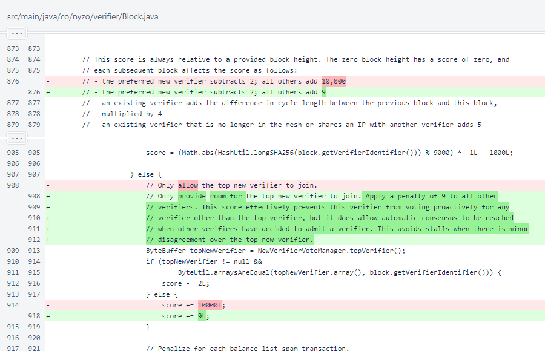

Nyzo version 590 (commit on GitHub) modifies new-verifier scoring to avoid blockchain stalls.
This version affects the verifier. While sentinels also score blocks, the scoring change in this version does not affect situations that the sentinel considers.
The blockchain stalled for 124 minutes between blocks 7,754,399 and 7,754,400. This stall was identified and solved by the cycle with override block votes, and no verifiers were lost when it was resolved. The blockchain caught up quickly after the stall was broken.
While this particular stall did not have lasting consequences, such incidents should not be taken lightly. The blockchain needs to consistently process transactions in a timely manner, or users will not be able to trust it. Also, stalls are inconvenient and stressful for operators of verifiers.
The root cause of this stall was scattering of votes and lack of votes from a significant portion of verifiers. This resulted in a disagreement over whether the top-voted new verifier had sufficient votes to be admitted to the cycle. Examination of the score calculation revealed room for improvement, and a change was implemented that will prevent stalls in blockchain processing if a similar situation is encountered in the future.
A single constant was changed. Now, instead of applying a huge offset that entirely eliminates the possibility of voting for a non-preferred new verifier, a smaller offset is applied. A non-preferred new verifier would be highly unlikely to receive this verifier's vote to become a consensus front-runner. The offset of 9 puts it behind the top two in-cycle verifiers, and a vote for it would be delayed by 180 seconds (3 minutes).
However, if a new verifier does emerge as a consensus favorite with more than 50% of the cycle's vote, this verifier would change its vote after 3 minutes to help that verifier exceed the 75% threshold required for automatic consensus.
